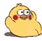
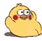

{% for cata_name in ['角色','情绪','情境','风格'] %}
{% endfor %}
{#结果提示#}
{#图片结果#}
{#减号是为了防止换行产生空白符#}
{%- for i in range(length) -%}
{%- if i%4==0 -%}
 {%- else -%}
{%- endif -%}
{%- endfor -%}
{%- else -%}
{%- endif -%}
{%- endfor -%}
{#页面选择按钮 下一句 初始化一个当前页码#}
{#尾部#}
© Copyright ISR BQB ®
Please contact us through zdq
Please contact us through zdq